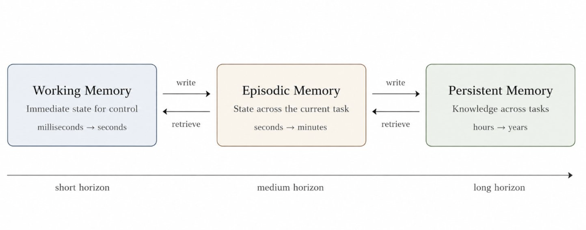

neptune
- creating a persistent memory layer for robotic deployments, aggregating context data (records, history, regulations) with physical data (MCAP files + ROS + URDF + logs etc). like supermemory.ai but for robots. with more deployment data, the memory is automatically updated + can be used as a data flywheel.
- memory is aimed to be used for downstream applications (LLM agents, VLA policies, simulators, eval/training pipelines and deployment/compliance tooling).
- memory system = bi-temporal claim graph + episodic/spatial memory with immutable evidence and revision/invalidation semantics.

* still in progress *